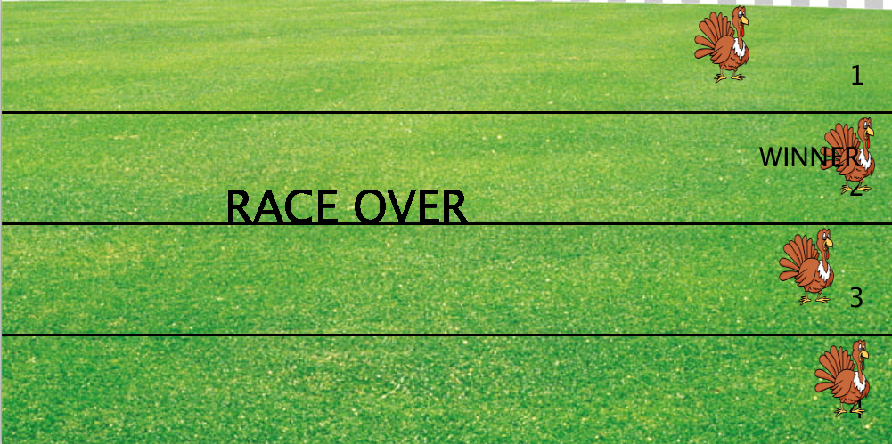

Turkey Trot

Goal:
Make a race track for the turkeys and announce the winner of the Turkey Trot race.
Steps:
- Find the TurkeyTrot recipe starter code (.pde) and follow the instructions in the code to complete the program.
- If you know how to use arrays, use the TurkeyTrotWithArrays recipe. Otherwise, use the TurkeyTrotNoArrays recipe.